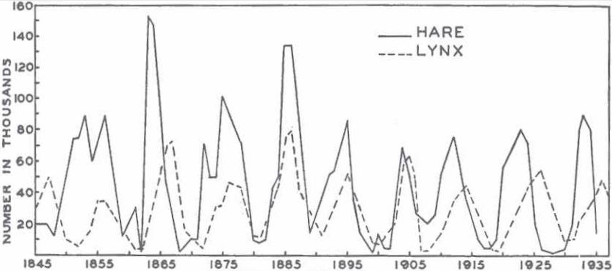
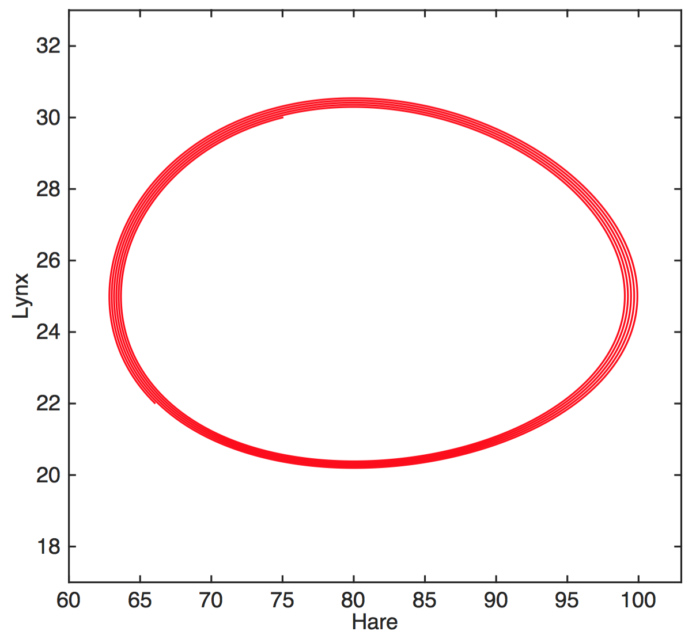
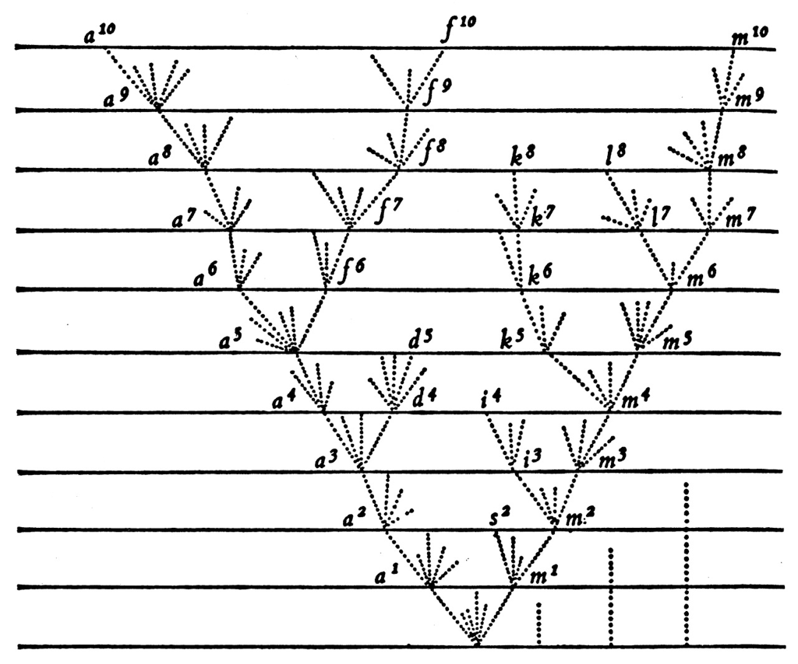
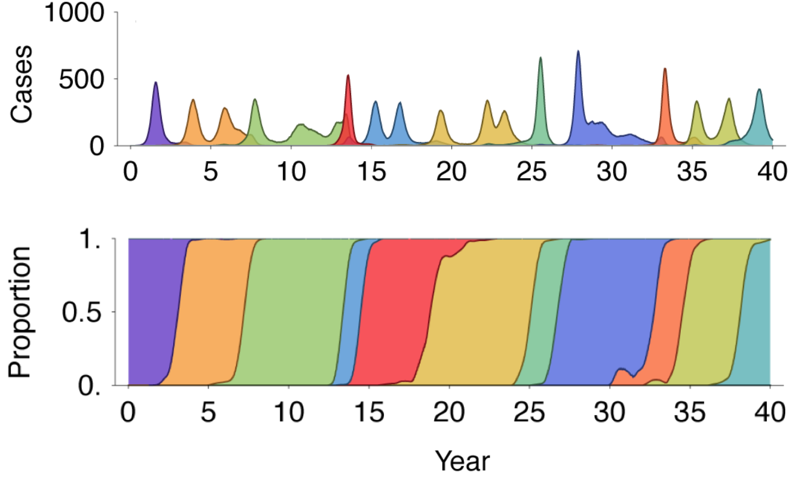
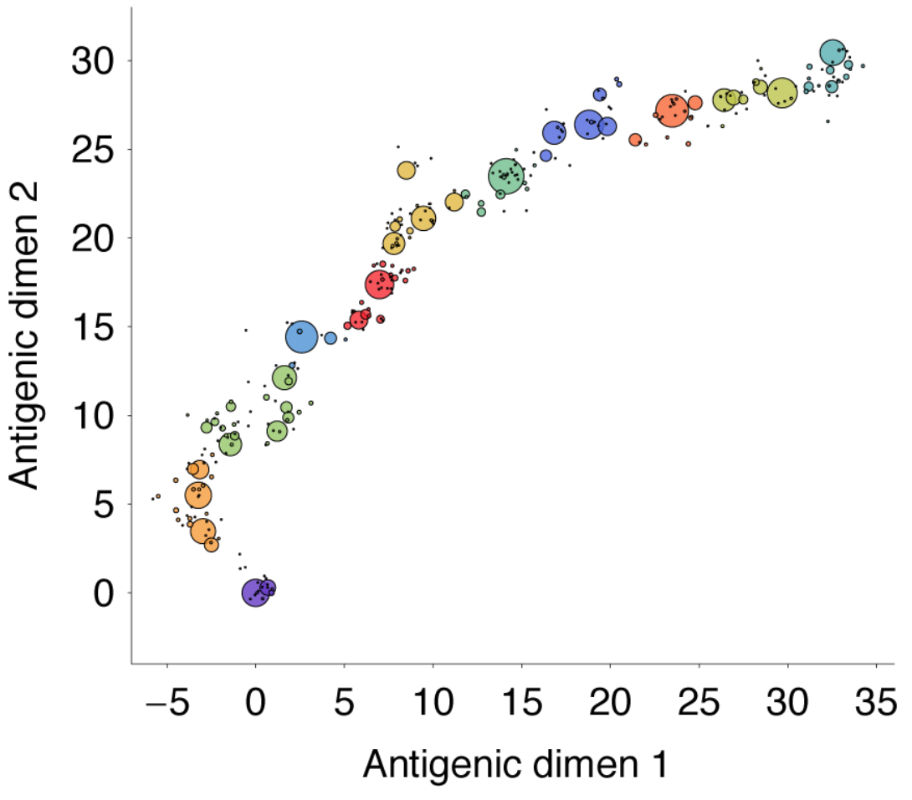
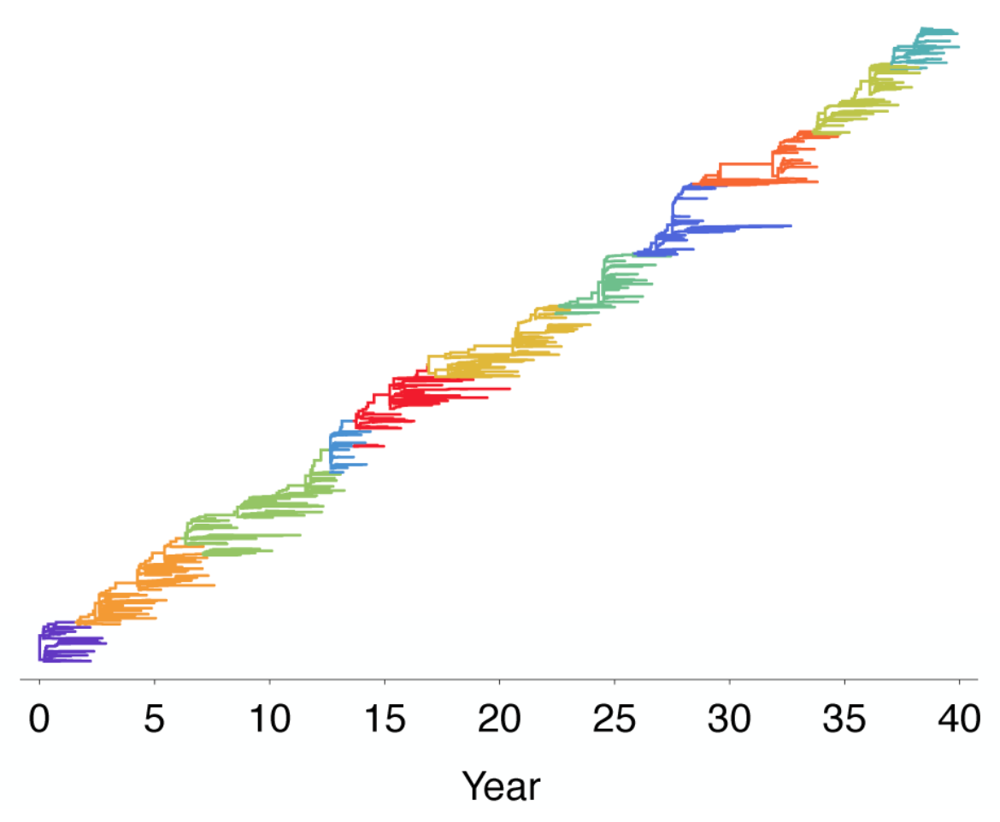
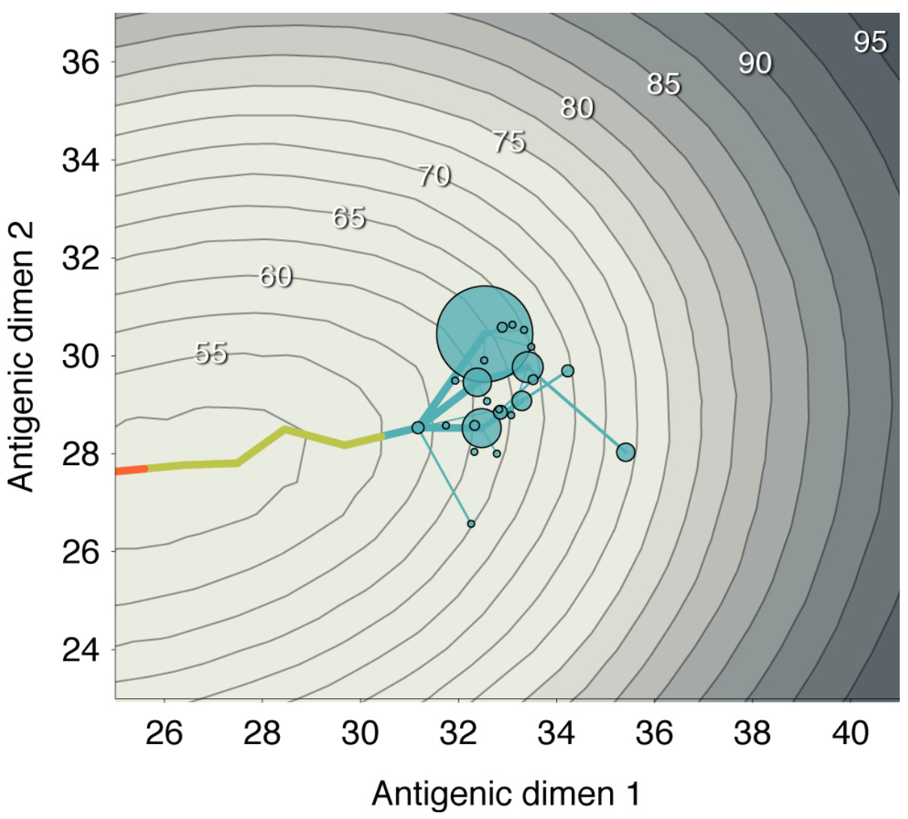
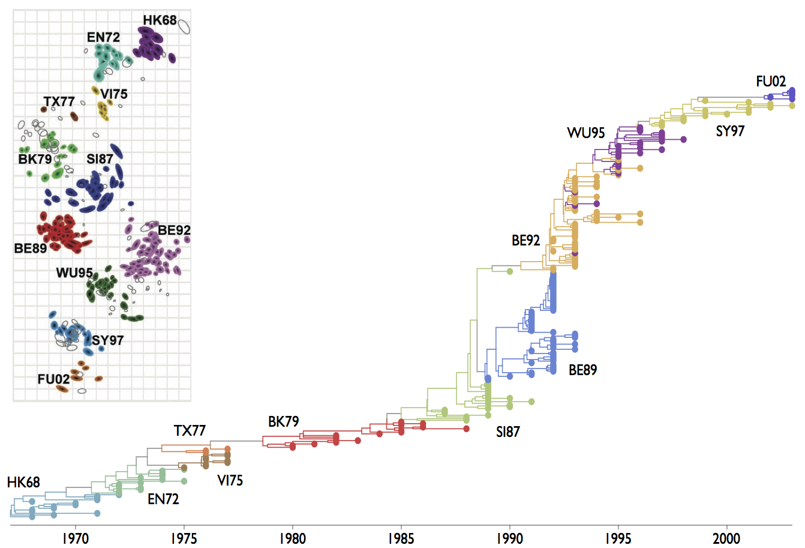

Very generally, I think of immune systems and pathogens as predator-prey interactions
Dynamical interactions and feedback

Maclulich 1937
Simple model captures dynamics
$$H'=aH-bHL$$
$$L'=cHL-dL$$
$H$ hares, $L$ lynxes
hare birth rate $a$, predation rate $b$,
consumption rate $c$, death rate $d$
This model is locked into a periodic cycle

Rapid evolution and generation of diversity in immune interactions leads to complex strain dynamics
Hundreds (or thousands or millions) of interacting pathogen strains and immune clones
Fortunately, we can read out genotype (through sequencing) and phenotype (through
flow and other assays) for pathogens and immune clones
This leads to a natural focus on interpretation of sequence data
We favor a phylogenetic approach here. This shows genealogical connections between circulating
strains and B-cell clones
Phylogenies can connect evolution to ecology

Darwin 1859
Competition between pathogen strains (or BCR or TCR clones) has a variety of dynamical outcomes
Commonly, however, new strains (or clones) emerge and increase in frequency
Emergence of novel strains causes population turnover and spikes in incidence

Drift in antigenic phenotype through time

Population turnover seen in the pathogen phylogeny

Immune landscape mediates competition among pathogens and selects for drift variants

This pattern of drift by clade replacement is seen in the global influenza phylogeny
